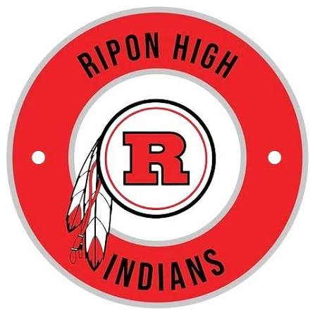
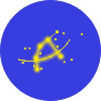
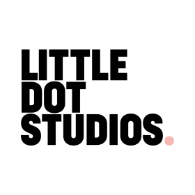

Master's studies in Media Informatics (M.Sc.)
HTW Berlin · 2023–present
HTW Berlin · 2023–present
HTW Berlin · 2018–2023
HTW Berlin · 2017–2018
California, USA · 2013–2014

Archenhold-Oberschule, Berlin · 2010–2017

gematik GmbH, Berlin · September 2022–present
Volkswagen Commercial Vehicles · January–June 2022
Little Dot Studios · 2021

Bildergarten Entertainment · 2020–2021
Penta Hotel Berlin Köpenick · 2016–2018
California, USA · 2013–2014